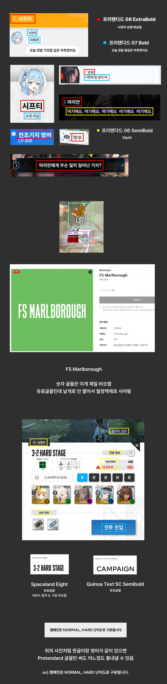
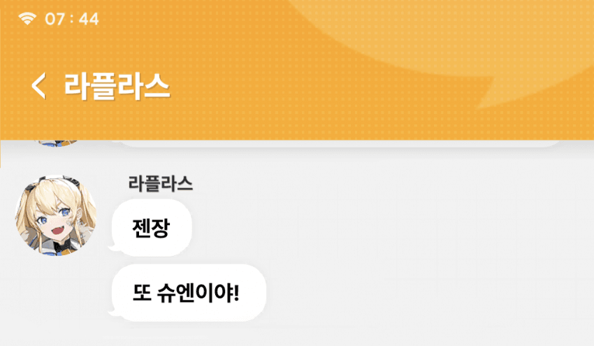
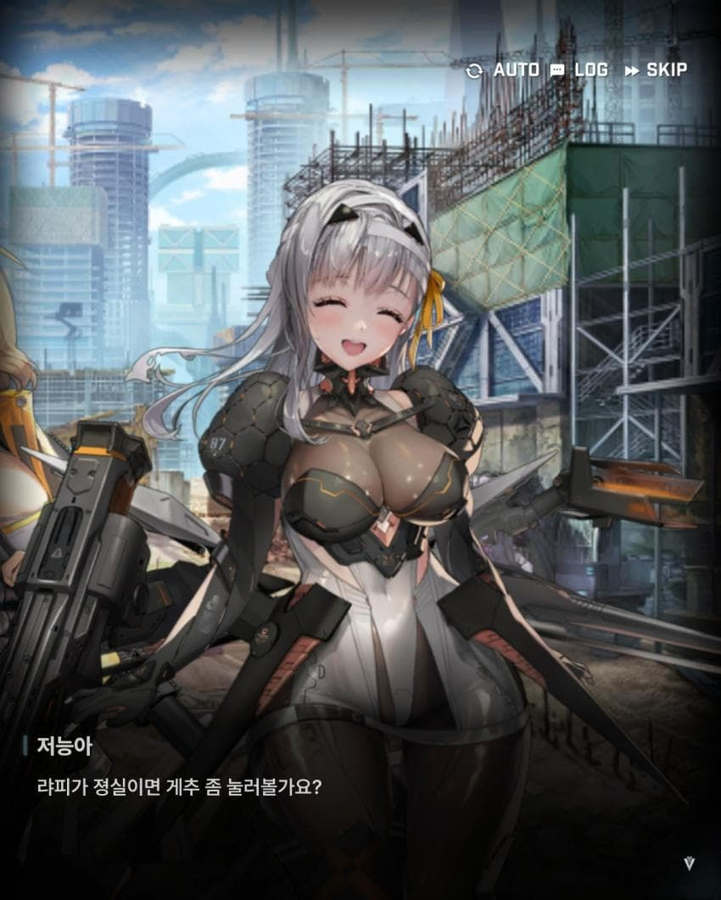

2024-02-08 백업됨
창작할 때 자료용으로 만든거

프리텐다드는 산돌 고딕이랑도 많이 닮았음
근데 갠적으로 나는 프리텐다드를 많이 씀 (일단 외국어를 많이 지원해서)
둘 다 디자이너들이 많이 쓰는 글꼴이라
취향껏 선택하시면 될듯

블라 닉네임 글꼴이랑 말풍선에 음영이 져있으니까
그림자 레이어로 배경색 흐리게 해서 Opacity 20 쯤 잡아주면 됨

인게임 대사는 Opacity 80 으로 맞춰주고
동일 레이어 복사해서 가우시안 흐리기 이후 Opacity 20 으로 맞추셈
끝